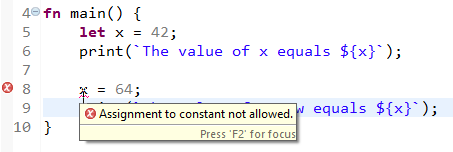

Common Concepts
Variables
By default variables in XDK LIVE are immutable which helps us optimize code at compile time. However, you can always choose to make variables mutable if you need it. When a variable is immutable that means its value has to be set during declaration and cannot be changed afterwards. The following code snippet illustrates the idea (we’ve omitted the package and import statements for brevity):
fn main() {
let x = 42;
println(`The value of x is ${x}`);
x = 64;
println(`The value of x is now ${x}`);
}
When you save this code, you will see an error message Assignment to constant not allowed. at the x = 64 statement.
That’s the compiler enforcing the immutability of x.

To make variables mutable, use the var keyword. Then, you can re-assign a value to the variable after it was declared.
For example
var x = 42;
x = 64;
does not produce any compiler errors, unlike the example above. Because we wrote var instead of let, x became mutable and thus could be re-assigned to a different value.
Tip: be immutable where you can
Using mutable variables instead of immutable ones can lead to less efficient code being generated. Thus, as a rule of thumb use immutable variables where you can.
Types and Type Inference
Until now we have never ad to write the type of the variables we declared. XDK LIVE supports type inference so that you, the developer, does not have to tell the compiler things it already knows. However, there are times when we are unable to infer the type of a variable, for example when it is not initialized, or the compiler gets the type wrong. In those cases you can explicitly tell the compiler what type a variable should have. For example:
let x : uint8 = 20; // x is forced to be uint8, compared to the otherwise inferred int32
var y : uint16; // y does not have an explicit initialization, so we need to explicitly denote the type.
This syntax for specifying types is consistent throughout the language. You can use it to specify the types of function parameters, the return type of a function or the types of structure members.
Scoping and Shadowing
In XDK LIVE variables are block scoped and there is no shadowing within the same block. This is unlike languages like Rust or Haskell for example where one would be able to re-use the same name in multiple variable declarations.
The following is not legal XDK LIVE code, the compiler will complain that it Cannot redeclare variable 'x'.
fn main() {
let x = 42;
let x = x * 2; // Compiler error: Cannot redeclare variable 'x'
let x = x * 3; // Compiler error: Cannot redeclare variable 'x'
}
However, in a new block one can shadow a variable declared outside that block. The following code, for example, works just fine as it takes the x declared outside the if block, multiplies it by two and stores it in a new immutable variable also named x.
fn main() {
let x = 42;
if(true) {
let x = x * 2;
println(`x in block equals ${x}`); // Output: x in block equals 84
}
println(`x outside block equals ${x}`); // Output: x outside block equals 42
}
Expressions
Expressions can be one of the following literals:
0xBA /* hex uint32_t literal */
0b01 /* binary uint32_t literal */
1 /* uint32_t literal */
-1 /* int32_t literal */
-1.0 /* float literal */
1.0e4 /* float literal */
"1" /* string literal */
'1' /* string literal */
Expressions support basic arithmetic.
let foo = 1 + 1;
(foo * 2) - 3.0;
Valid operators are:
- multiplication:
* - addition:
+ - subtraction:
- - division:
/ - bit-wise negation:
~ - bit-shift left:
<< - bit-shift right:
>> - logical negation (bool only):
!
Expressions can be explicitly cast to another type using the as keyword
var foo = (42.0 * 3.5) as uint32_t;
String interpolation
Optional Values
All types can be made optional using the ? operator
var foo : uint32_t?;
var bar : RingBuffer<bool?> = new(size = 10);
Optional values can be unpacked using the value function
var foo : uint32_t? = 42;
foo.value() == 42 /* true */
value(foo) == 42 /* true */
Control Structures
Code can branch using if statements
var foo = 10;
if(foo >= 15) {
printf("That's high");
} else if(foo >= 10) {
printf("That's less high");
} else {
printf("That's not high");
}
If-conditions must be boolean
if(foo) { } /* compiler error: Incompatible types int32_t and boolean. */
Curly brackets for blocks are required
if(true) printf("Foo"); /* syntax error: Missing { */
Traditional for loops are supported
for(var i = 0; i < 10; i += 1) { }
Traditional while loops are supported
while(true) { }
Do-while loops are supported
do { } while(true)